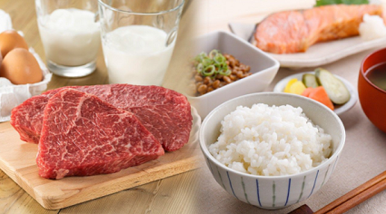

Les vêtements traditionnels nippons inspirent la mode mondiale depuis de très nombreuses années, pour ne pas dire depuis les tous débuts de l’industrie de la mode. Le kimono a particulièrement séduit l’Occident, qui se l’est approprié en le modifiant à sa guise, pour donner des robes ou des vestes de style oriental.
Mais si le Japon a su étendre sa vision de l’esthétique au monde entier, il n’est pas pour autant resté imperméable à ce que le reste du monde avait à lui offrir. En effet, alors que les nouvelles générations abandonnent petit à petit le style japonais pour adopter des pratiques vestimentaires plus occidentales, les américains ont joué un rôle crucial dans le développement d’un nouveau courant vestimentaire : le streetwear.

Alimentation
Si la cuisine traditionnelle japonaise continue de garder cette image d’alimentation saine, ce n’est pas parce qu’on « mange japonais » qu’on est assuré de vivre plus longtemps. En effet, chaque peuple présente des caractéristiques physiologiques différentes, héritées des gènes de ses ancêtres mais aussi de leurs habitudes alimentaires et de leur environnement. Okuda Masako, médecin généraliste, fait des recherches sur les différences ethniques en matière médicale et nous explique que le meilleur régime alimentaire à adopter diffère suivant nos caractéristiques physiologiques. Quelle conclusion tire-t-elle pour que la population japonaise soit en meilleure santé ?